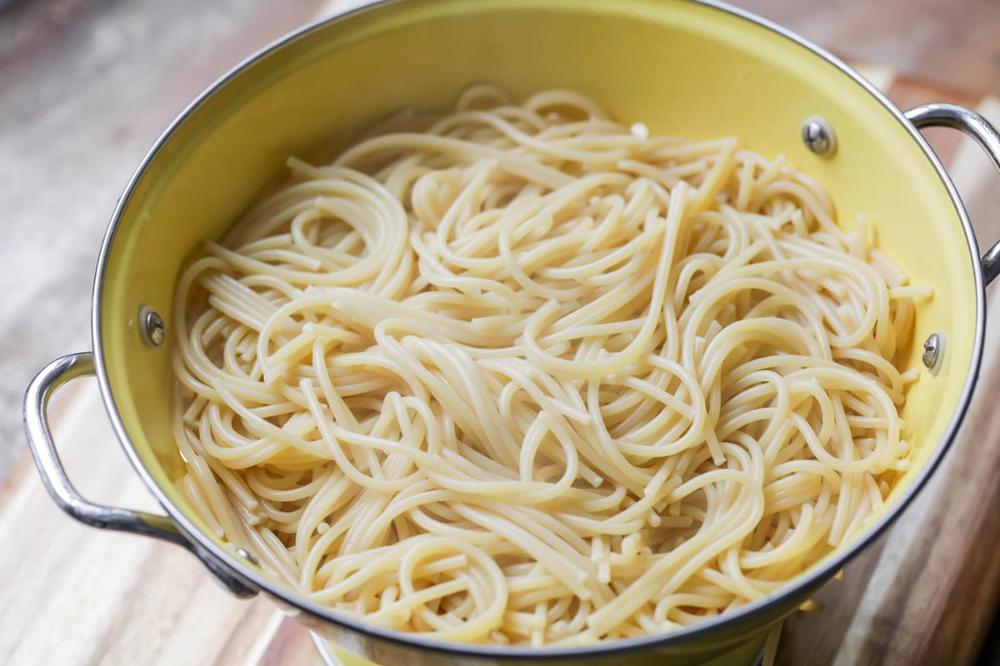

Spaghetti

Description
Simple, delicious and easy to make
Also good when eaten as leftovers
Ingredients
Steps
- Brown the hamburger in a large pan. Drain the fat if desired
- Throw in salt, pepper, tomato sauce and paste, water (with the bouillon cubes in it or beef broth in the can), sugar, basil, oregano, and garlic. Simmer on low for 45 minutes to an hour
- Twenty minutes before the hour is up, cook the box of spaghetti noodles as directed on the package. Once the noodles are cooked, add them to the sauce and serve right away